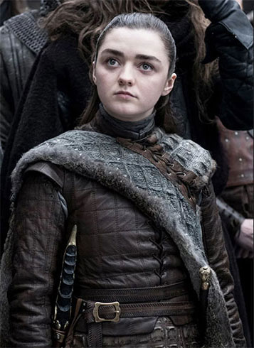

Arya Stark
Princess Arya Stark is the third child and second daughter of Lord Eddard Stark and his wife, Lady Catelyn Stark. She is the sister of the incumbent Westerosi monarchs, Sansa, Queen in the North, and Brandon, King of the Andals and the First Men.
After narrowly escaping the persecution of House Stark by House Lannister, Arya is trained as a Faceless Man at the House of Black and White in Braavos, using her abilities to avenge her family. Upon her return to Westeros, she exacts retribution for the Red Wedding by exterminating the Frey male line.
Returning to Winterfell, Arya initially finds herself at odds with Sansa due to the naïvety of her youth and perceived lack of support for their "half-brother", Jon Snow, King in the North.
However, their tumultuous relationship is discovered to be the result of Petyr Baelish's manipulation, and the two mend their sisterhood following his execution for his crimes against House Stark.
Arya then plays a significant role in the Great War, effectively ending the conflict through her killing of the Night King during the Battle of Winterfell. Afterwards, Arya rides south with the Hound to kill Cersei Lannister, not intent on returning to Winterfell.
She arrives at King's Landing as it is being destroyed by Daenerys Targaryen. After Sandor convinces Arya to abandon her quest for vengeance; Arya tries in vain to help the smallfolk survive the destruction of the city.
Weeks later, following Daenerys's assassination, Arya attends the great council that decides the future of Westeros. Arya's younger brother Bran is chosen as king by all the lords and ladies present there and the North is granted its independence.
After bidding farewell to her siblings, Arya decides to leave Westeros and sail west to discover what lies beyond where the maps of the known world end.